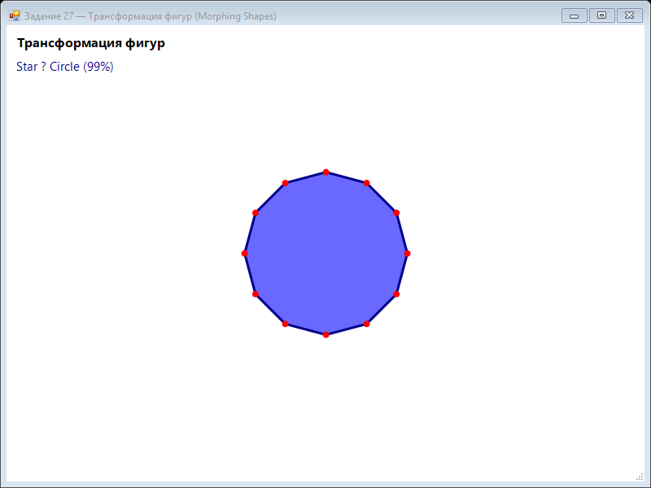

Урок 8.7: Морфинг фигур
Морфинг форм
Плавный переход фигур достигается интерполяцией каждой пары вершин. Это требует, чтобы фигуры имели одно и то же число точек.
private PointF[] Morph(PointF[] a, PointF[] b, float t)
{
PointF[] result = new PointF[a.Length];
for (int i = 0; i < a.Length; i++)
{
result[i] = new PointF(
a[i].X + (b[i].X - a[i].X) * t,
a[i].Y + (b[i].Y - a[i].Y) * t);
}
return result;
}📝 Пример задания — морфинг фигур
Три фигуры (круг, квадрат, звезда) с 12 вершинами интерполируются циклически. Параметр morphT от 0 до 1 делит цикл на три фазы перехода:
using System;
using System.Drawing;
using System.Drawing.Drawing2D;
using System.Windows.Forms;
namespace CSharpGraphicsApp
{
public class Task27_MorphingShapes : Form
{
private float morphT = 0;
private readonly Timer timer = new Timer();
private const int ShapePoints = 12;
public Task27_MorphingShapes()
{
Text = "Задание 27 — Морфинг фигур (Morphing Shapes)";
Size = new Size(800, 600);
BackColor = Color.White;
DoubleBuffered = true;
Paint += Form_Paint;
timer.Interval = 16;
timer.Tick += (s, e) => { morphT += 0.02f; if (morphT > 1) morphT -= 1; Invalidate(); };
timer.Start();
FormClosed += (s, e) => timer.Stop();
}
private PointF[] GetCirclePoints(float cx, float cy, float r)
{
var pts = new PointF[ShapePoints];
for (int i = 0; i < ShapePoints; i++)
{
float a = (float)(i * 2 * Math.PI / ShapePoints);
pts[i] = new PointF(cx + r * (float)Math.Cos(a), cy + r * (float)Math.Sin(a));
}
return pts;
}
private PointF[] GetSquarePoints(float cx, float cy, float size)
{
var pts = new PointF[ShapePoints];
for (int i = 0; i < ShapePoints; i++)
{
float a = (float)(i * 2 * Math.PI / ShapePoints);
float x = size * (float)Math.Cos(a);
float y = size * (float)Math.Sin(a);
float maxVal = Math.Max(Math.Abs(x), Math.Abs(y));
pts[i] = new PointF(cx + (x / maxVal) * size, cy + (y / maxVal) * size);
}
return pts;
}
private PointF[] GetStarPoints(float cx, float cy, float r)
{
var pts = new PointF[ShapePoints];
for (int i = 0; i < ShapePoints; i++)
{
float a = (float)(i * 2 * Math.PI / ShapePoints);
float rad = (i % 2 == 0) ? r : r * 0.4f;
pts[i] = new PointF(cx + rad * (float)Math.Cos(a), cy + rad * (float)Math.Sin(a));
}
return pts;
}
private PointF[] MorphShapes(PointF[] s1, PointF[] s2, float t)
{
var result = new PointF[s1.Length];
for (int i = 0; i < s1.Length; i++)
result[i] = new PointF(
s1[i].X + (s2[i].X - s1[i].X) * t,
s1[i].Y + (s2[i].Y - s1[i].Y) * t);
return result;
}
private void Form_Paint(object sender, PaintEventArgs e)
{
e.Graphics.SmoothingMode = SmoothingMode.AntiAlias;
e.Graphics.Clear(Color.White);
float cx = ClientSize.Width / 2f;
float cy = ClientSize.Height / 2f;
float r = 100;
var circle = GetCirclePoints(cx, cy, r);
var square = GetSquarePoints(cx, cy, r);
var star = GetStarPoints(cx, cy, r);
PointF[] current;
string name;
if (morphT < 0.33f)
{
float t = morphT / 0.33f;
current = MorphShapes(circle, square, t);
name = $"Circle → Square ({(int)(t * 100)}%)";
}
else if (morphT < 0.66f)
{
float t = (morphT - 0.33f) / 0.33f;
current = MorphShapes(square, star, t);
name = $"Square → Star ({(int)(t * 100)}%)";
}
else
{
float t = (morphT - 0.66f) / 0.34f;
current = MorphShapes(star, circle, t);
name = $"Star → Circle ({(int)(t * 100)}%)";
}
using (var brush = new SolidBrush(Color.FromArgb(150, Color.Blue)))
using (var pen = new Pen(Color.DarkBlue, 3))
{
e.Graphics.FillPolygon(brush, current);
e.Graphics.DrawPolygon(pen, current);
}
using (var brush = new SolidBrush(Color.Red))
foreach (var pt in current)
e.Graphics.FillEllipse(brush, pt.X - 4, pt.Y - 4, 8, 8);
e.Graphics.DrawString("Морфинг фигур",
new Font("Segoe UI", 12, FontStyle.Bold), Brushes.Black, 10, 10);
e.Graphics.DrawString(name,
new Font("Segoe UI", 11), Brushes.DarkBlue, 10, 40);
}
}
}Практическое задание
- Создайте последовательность фигур с одинаковым числом точек.
- Реализуйте интерполяцию между ними.
- Анимируйте переключение форм во времени.
- Добавьте подпись текущего перехода.
Задание по аналогии: Морфинг фигур
По аналогии с Task27_MorphingShapes создайте анимацию плавного перехода между тремя фигурами.
- Объявите константу
const int ShapePoints = 12и полеfloat morphT = 0. ВTimer_TickувеличивайтеmorphT += 0.02fи сбрасывайте:if (morphT > 1) morphT -= 1. - Реализуйте методы
GetCirclePoints,GetSquarePoints,GetStarPoints— каждый возвращает массив из ShapePoints точек типаPointF[]. Все три фигуры должны иметь одинаковое число вершин. - Реализуйте метод
MorphShapes(PointF[] s1, PointF[] s2, float t): для каждой пары вершин вычислитеresult[i].X = s1[i].X + (s2[i].X - s1[i].X) * t. - В
Form_Paintопределите текущую фазу поmorphT(0..0.33 = circle→square, 0.33..0.66 = square→star, 0.66..1.0 = star→circle). Нарисуйте текущую фигуру черезFillPolygonиDrawPolygon. - Дополнительно: отмечайте вершины красными точками через
FillEllipse— это помогает увидеть, как каждый узел перемещается при морфинге.
Пример результата выполнения задания:

Скриншот программы (Task27)
💡 Совет: Для квадрата вычислите точки через cos/sin на окружности, а затем нормализуйте на
max(|x|, |y|) — это даёт скруглённый квадрат. Увеличьте ShapePoints до 24 для более плавного морфинга.
Тест
Почему фигуры должны иметь один и тот же набор вершин? Что происходит при разном количестве точек?